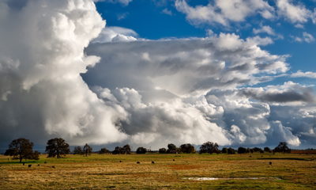
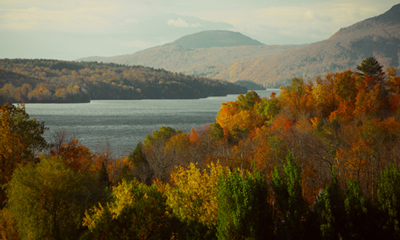
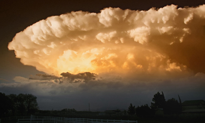

Rollin' Thunder- by Dave CanonStorm clouds rolling in from south ended Franklin City's record setting dry spell late Summer 2017.
Autumn Palette- by Shirley KlickenFall colors showed up early at Springfield Reservoir in October of 2016. Gentle Slope- by Bobby DoogaGreenville City Golf Course opened two weeks early for Spring 2015. 'Round the Bend- by Polly RoydWildflowers peak over the cliff near Franklin Reservoir. Winter Sunrise- by Jasper KodakTemperatures reached sub-zero at Milton Peak during the Winter of 2012.
Something Wicked This Way Comes- by John NikonAn ominous thunder-head threatens a peaceful evening in Greenville.